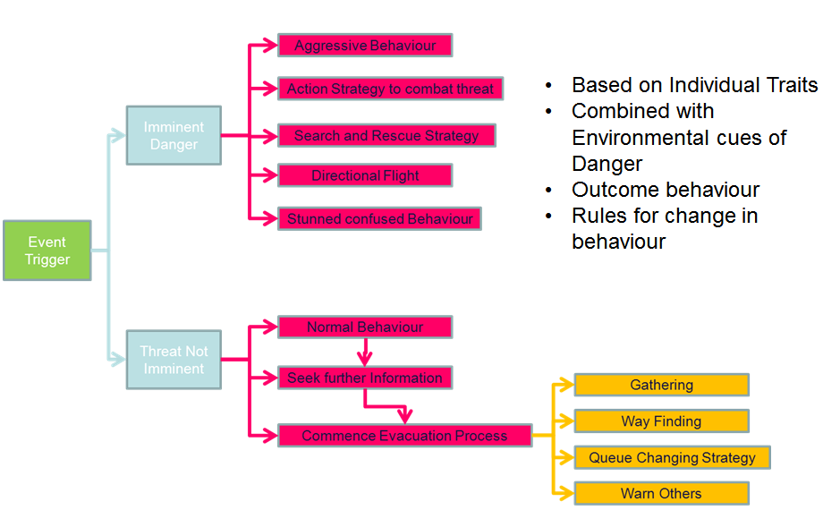

Evacuation behaviours can be quite varied. The event that triggers the need to evacuate can be sudden, such as a gas explosion in a building, or develop gradually, such as a bushfire. When the threat is perceived as causing imminent danger, a range of behaviours can be observed. Different strategies emerge when the perceived threat is not immediate.
These different responses can be modelled using our influence (or "learned intelligence") model, and can be used for examining the effect of changing behaviours in evacuations. An example of a simulation involving evacuation that we have done is the case study of a hypothetical terrorist attack on Central Station, Sydney.